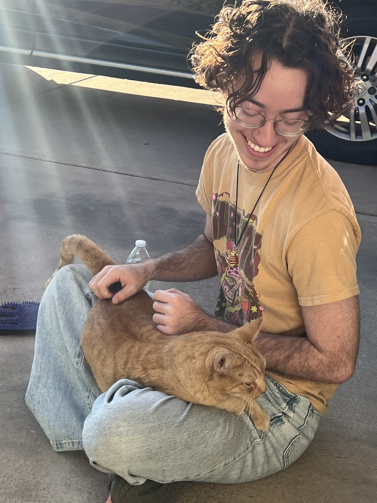

About Me
I've been writing for as long as I can remember. My interest in journalism began in 7th grade when I chose it as an elective; I then wrote for my high school newspaper, The Viking Views. As I became involved in activist circles at my school, I developed an interest in political reporting. I strive to make a difference with my writing by amplifying voices that often go unheard, and I hold truth and empathy as guiding principles in both my professional and personal life.
I often joke about journalism being in my blood; my mom majored in journalism at Cronkite and my dad owned a newspaper. However, I came to the field of my own accord. Today, I am proud to be building my skills at one of the top journalism schools in the country.
I was born and raised in Arizona, and I plan to stay here so long as it remains habitable. In my free time, I enjoy reading, coding (I made this website myself!), and putting together puzzles. I have an insatiable curiosity and a love for learning; I'm frequently getting lost in Wikipedia rabbit holes. I use every story I write as an opportunity to discover more about the world and the people in it.